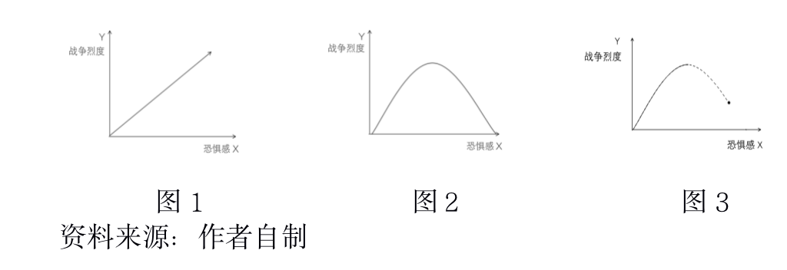

收录于合集

作品简介
【作者】 张一飞，中国社会科学院美国研究所助理研究员，国政学人青年学术顾问。
【引用】 张一飞：《试论恐惧感对大国战和的作用规律》，《当代美国评论》2020年第2期。
【排版】 梁鑫昱
内容提要
目前学术界对于大国博弈的研究主要分别集中于实力竞赛与观念对抗两个方向。但是，大国之间的战争或是和平是实力与观念两种要素在同一时空共同作用的结果，两者的作用效果不可分割。本文旨在以“恐惧感”这一变量统合实力与观念两种要素对大国博弈中战和关系的作用效果，提出关于“恐惧感大小”与“大国战争烈度”的规律性猜想，并将猜想分解为假设加以验证。最终发现，“同优同质”与“异优异质”大国之间适中的恐惧感最有可能引发大国间烈度最高的局部战争，局部战争有可能蔓延为全面战争；而“异优同质”与“同优异质”大国之间极弱或极强的恐惧感引发大国战争的烈度则普遍偏低，甚至趋近于零。本文还以战略审慎与身份政治的相互依赖解释了恐惧感对大国战和作用规律的形成原理，并据此对中国和平崛起提出建议。
【关键词】 国际政治；国际体系；大国关系；大国博弈；战争与和平
正文
在主权国家仍为最重要国际行为体的国际体系中，大国博弈将继续长期保持国际关系中“最重要现象”的政治地位。所谓大国，通常被以“大”“富”“强”三个标准界定，即基础实体大、物质财富多、行为能力强。对于大国博弈的关注通常集中在有形的实力博弈与无形的观念博弈两个层面。但是，由于两种博弈各具特色且难以统合，因此，学界对于两种博弈如何共同作用、博弈结果有无规律等复杂问题鲜有问津。而单纯的实力或观念博弈又与国际政治现实严重脱节，“充满不确定性”“辩证看待现象”等结论无法进一步指导国际关系实践。本文旨在发掘大国博弈中统合实力与观念两个博弈层次的变量及其作用规律，并由猜想下沉至假设验证，最终为和平崛起大国提供方法论启示。如何用一种变量统合实力与观念两种变量的作用效果？在这种变量作用下，不同特征的大国博弈结果分别呈现出哪些规律？这种或这些规律得以呈现的原因为何？中国应如何顺应大国博弈的规律，进一步实现和平崛起？这些都是本文要回答的主要问题。
01
引言：大国博弈研究现状
****（一）专注于多元实力竞赛的国家间博弈研究
大国博弈过程的最直接的体现是实力的消长，其结果的最直接的体现是实力对比产生质变性差距。因此，实力竞赛始终是大国博弈研究中的主流方向，且“实力”一词的内涵被诸多学者不断丰富。
最原始亦最肤浅的实力关注者只沉迷于硬实力的对比变化。以肯尼斯·华尔兹（Kenneth Waltz）为代表的新现实主义者甚至同意在国家功能类似、体系文化相同的背景下，忽略其他差异，只将硬实力的大小甚至使用武力能力的大小，作为区分国家的唯一标准。约翰·米尔斯海默（John J. Mearsheimer）进一步将新现实主义推演至更加悲观的进攻性现实主义，他声称，“大国主要由其相对军事实力来衡量”。在现实主义者看来，权力的构成主要是以经济和军事实力为代表的硬实力，权力运作的结果主要通过硬实力的消长体现。这符合一种学术关注在起步阶段所偏爱的自变量的特征：可视化、可量化、可重复检验。但是，随着现实世界的复杂程度逐渐增加，专注于硬实力的研究成果对于现实世界的解释力逐渐衰退，以至于更多“肉眼不可见”的要素也被纳入实力范畴。
偏离硬实力幅度较小的尝试来自克莱因方程。1977年，雷·克莱因（Ray S. Cline）提出了综合国力的计算公式：（基础力量+经济能力+军事能力）×（战略意图+战略意志），将不可视的意图与意志作为实力发挥作用的乘法级变量比仅仅关注静态实力的加减变化向更加贴近现实的方向前进了一大步。幅度更大的尝试者则普遍提出了与硬实力并驾齐驱的实力变量。约瑟夫·奈在不破坏权力“影响其他国家”这一功能内核的前提下，指出国家除强制手段之外，还有说服和吸引等手段，在直接使用硬实力强制实现目标越来越危险的背景下，硬实力以外的文化、信息反馈、合作能力等“软实力”要素越来越重要。但是，约瑟夫·奈也承认，有时军事、经济等硬实力要素也能发挥软实力的作用，因为其他国家也有可能被本国出色的硬实力成就所吸引，进而使本国对他国家产生领导力，即促使其他国家自愿追随而非强迫服从的能力。在此基础上，有学者进一步提出了“巧实力”概念，试图将软硬实力相结合，使国家在不同情境下发挥“强制”或“说服”的各种功能，其最终目的都是更加有效地实现国家目标。“巧实力”意味着国家必须对各种实力工具的优势和缺陷有深刻理解，并使用正确的工具对他国施加影响。此外，为破坏和对冲中国提升国际影响力的努力，美国智库、媒体、学界、政界自2017年开始使用“锐实力”指责中国对美国进行的渗透。所谓“锐实力”是指“一种能够穿透、渗透目标国家的政治和信息环境的能力”。“锐实力”的吹捧者认为中国正在使用经济、关系、媒体等方面的优势营造有利的外部环境并进一步拓展中国文化、价值观和发展模式的影响范围。
从硬实力到克莱因方程，再到软实力、巧实力与锐实力，“实力”关注者们对于国家博弈的理解越来越深刻、越来越动态。但是，他们的关注仍然没有脱离“实力”本身，所谓“能力”和“权力”只是描述“实力”运动过程中的不同侧面，而所谓的“硬”“软”“巧”“锐”无一不是国家在物质力量充沛的基础之上，获得生存和发展权利的工具。
** （二）专注于观念对立性的国家间博弈研究**
与实力竞赛的逻辑起点不同，许多学者将国家间博弈视为其观念对立的外在表现，而非争夺物质资源或影响力的功利行为。观念交汇则形成身份，而身份独特则产生意义，专注于观念的学者普遍认为国家在关心实力是否占据优势的同时，更为关心其基于身份的存在意义是否被他国认可。对于这些学者而言，如果实力的目的是权力，那么权力的目的就是意义。意义从身份产生，身份由观念区分，因此，文明、文化、意识形态等观念领域的竞争便必然成为大国博弈的另一类主题。
最经典的文明主义世界观来自亨廷顿，他把世界的基础视为基于不同价值观念的文明部落，并认为文明的差异和共性决定了全球战和大计。他甚至预言，“在文明和野蛮之间的更大的冲突，即全球性的‘真正的冲突’中，已经在宗教、艺术、文学、哲学、科学、技术、道德和情感上取得了丰硕成果的世界各伟大文明也将彼此携手或彼此分离。在即将来临的时代，文明的冲突是对世界和平的最大威胁”。但是，亨廷顿始终没有对“文明”进行过确切界定，而囊括过多内涵的“文明”亦确实难以用单纯的宗教信仰、生活习惯或价值观念衡量。
相较于文明这一宏大概念，意识形态的对立更加接近公民的基本政治生活。但到目前为止，学术界并没有形成对于意识形态的普遍定义。在大部分语境中，意识形态是一种世界范围内的政治性、社会性知觉，包含情感、行为和主张。基于政治知觉的意识形态不仅是一种信念，也是一种工具，它被内部观念驱动，也被外部利益外驱动。对于精英而言，意识形态最重要的功能是通过自赋正义带动公众情绪。因此，不同意识形态的对立无论源于有心或是无意，一旦在社会范围内蔓延，便很难使用合作理性消除。在某些极端情况下，意识形态甚至会被某些国家用作攻击其他国家的武器，苏联的解体与中东国家的混乱很大程度上是西方国家意识形态演变策略的产物。
在宏大的文明与具体的意识形态周边还存在传统文化、制度设计、发展模式等与观念紧密联系的外围概念，它们也是国家观念博弈的重要战场。如果说人性中的欲望导致冲突、理性导致合作，那么激情便导致“被他人认可”的需求，并为寻找“我”之一物存在的意义开辟了另一个维度的战场。
** （三）两大博弈场的同时空性问题**
这些博弈场中的佼佼者通常会被定义为“大国”，它们或者同时拥有绝对领先的超然实力和独特观念，或者在实力和观念的某一方面，甚至某一方面中的某一层次远超他国。然而，无论一个国家凭何进入大国门槛，一旦进入，便注定要在基于不同逻辑的实力和观念两个博弈场“两线作战”，而在同一时空中，围绕国际关系最核心的“战争与和平”问题，大国博弈的战和结果却只能有一个。
就理解大国博弈的战和特征（而非胜负结果）而言，随即出现两大难题：第一，在不同特征的大国博弈中，是否存在战和特征层面的普遍规律？第二，如果存在普遍规律，两个维度不同、各具特征的变量如何共同导致大国博弈战和特征的规律性出现？实力和观念的静态组合界定了大国，却无法帮助理解大国的行为。如果要以“某种实力、观念的动态融合”为自变量，以“大国博弈的战和结果”为因变量，进而观察和验证某种融合变量和大国战争之间的因果联系和作用规律，则必须找到实力和观念的融合作用点，提出关于引发或规避战争的规律性猜想，并为验证这些关于规律的猜想及其假设找到强有力的经验证据。
02
关于恐惧感对大国战和作用效果的猜想与假设
** （一）实力与观念博弈的“恐惧感”归宿**
实力逻辑的终点是权力，而观念逻辑的终点是意义，两者在“影响力”的层次存在外在的共通之处，但却有着完全不同的精神内核。在某些极端情况下，意义的追求者可以用毁灭自身求取意义，而权力的追求者可以放弃所有人格底线获得权力。换言之，实力影响力和观念影响力的性质和效果无法简单通约。因此，不能用模糊的“影响力”融合实力和观念的共同作用效果。如果实力和观念作用于大国博弈的战和规律需要一个中间变量，那么这一变量既要和实力与观念存在一致的内在转化逻辑，又要能够直接作用于战争因变量，并不再借助另一个中间变量的力量。
以实力和观念为客观基础，寻找两者对于国家行为的作用效果的最大公约数，则必须深入国家最深层次的、最可通约的人格化感受。因为独立于感受之外的客观变量各有其内在计算方式，且未必能够在感受之外找到其通约规则；而国家的人格化感受则是基于共同的人性乃至人类的生物本能，因此将国家对于实力和观念演变趋势的反应视为人在特定条件下必然行为中的一种是较为安全的通约方式。
“现代生物学，与人类学所介绍的自然状态完全相反：人类在进化过程中，从没经历过隔离时期；人类的灵长目先驱，早已开发出广泛的社会和政治的技巧；促进社会合作的功能是人脑与生俱来的”。换言之，社会性是人类与生俱来的生存方式，在社会中竞争与合作是人类的先天禀赋，而非如霍布斯和卢梭所言，是功利算计的结果。在社会性的支配下，竞争与合作无疑共同构成推动人类社会发展的完整机制。但人类在合作中必然存在对合作伙伴背叛的恐惧，在竞争中则必然存在被竞争对手消灭的恐惧，那些不知恐惧的人类早已在社会性进化大潮中覆灭，根本无法将其基因流传至今。因此，恐惧作为人类社会性的必然衍生品根植于人类的生物性本能，用“恐惧感”这一国家最深层次的人格化特征统合实力与观念变化趋势对于国家行为作用效果相对合理。
需要强调的是，所有概念和制度研究者都希望用一种静态的框架使每个国家都恰如其分地处于其应有的位置，而后保持这一健康的物理和心理状况，以实现世界的永久和平与发展。但令人遗憾的是，国家实力的发展永远不会静止，“军事、技术或其他方面的变化增加了征服领土的利益或者以其他方式变革国际体系的利益”。同时，由于“被他者认可”的边界可以无限扩张，国家对意义的追求亦永远不会满足。因此，无论是实力还是观念的变化，都始终处于“趋势”而非“格局”之中，希望使“格局”静止的人们都注定无法如愿。
什么样的趋势会使大国感到恐惧？从实力层面讲，实力越趋于平衡，大国间恐惧感越强。这里的大国既包括平衡国，也包括被平衡国。由于国际社会的无政府性与“真实意图不可知”仍会是相当长的历史时期中不争的事实，无论平衡国的真实意图为何，都将不可避免地使被平衡国感到安全压力，而被平衡国因恐惧而采取的自卫措施也必将反向加剧平衡国的恐惧。以至于现实主义者能够想到的最佳的维持国际和平的方式竟是充满风险的“恐怖的平衡”，用积极备战的方式使所有有敌意的国家不敢轻举妄动。已有学者以统计方式验证了“一个国家在基于行为能力的国际等级中排位越上升，其卷入战争的可能性越大”。这说明奥根斯基（Kenneth Organski）在其权力转移理论中指出的“权力接近程度”比“崛起国对已有国际秩序的满意程度”对战争更有意义，事实并非“假如崛起国与主导国没有历史的敌意，两国也依然可以保持权力转移的稳定”，而是只要实力接近，战争风险必然上升，无关主观意图。
从观念层面讲，价值观越趋于差异化，大国间恐惧感越强。第二次世界大战之后，美国几乎主导了所有的国际关系进程，并贡献了大量的国际关系理论，“无论是霸权稳定论、权力过渡论，还是新自由制度主义，都是起源于美国的问题，带有美国的本土特征。大概正因为如此，斯坦利·霍夫曼（Stanley Hoffmann）才说国际关系学是美国的社会科学，国际关系理论是美国的理论”。而从观念角度来看，美国最强的“本土特征”便是基督教改造异己者的强势战略文化。所谓的现实主义、自由主义、建构主义正是美国按照本国价值观念改造世界的理论工具。“不同难和”作为西方国际关系理论的集体潜意识在一定程度上塑造了国际战略文化。在观念不同的国家之间，价值差异虽然不必然产生改造对方的战略冲动，但至少会加剧彼此的陌生感进而降低战略互信。
由于实力趋于平衡与观念趋于差异化都会造成大国间恐惧感上升，因此，可将实力无限趋于接近（同优）的大国间恐惧感与观念无限趋于对立化（异质）的大国间恐惧感均赋值为1，将实力差距甚大且相对静止（异优）的大国间恐惧感与观念对立最小（同质）的大国间恐惧感均赋值为0。可以发现：最低主体间恐惧感发生于“异优同质”的大国之间（0-0），较大的主体间恐惧感发生于“同优同质”与“异优异质”的大国之间（0-1），最大的主体间恐惧感发生于“同优异质”的大国之间（0-2）。但是，恐惧感对大国战和的作用效果仍然有待经验验证。
** （二）恐惧感对大国战和作用规律的提出与验证**
1.关于研究方法的说明
为验证大国间恐惧感与战争烈度（和平的大国间战争烈度为0）之间的关系，本文将按照上述分析提出大国间恐惧感与战争烈度的正相关关系，并分阶段验证相关假设。如果正相关关系成立，则可得出符合直觉的“恐惧感－战争烈度”直线函数模型；如果正相关关系不成立，则须提出新的关系猜想并加以验证。
在分阶段验证大国间恐惧感与战争烈度关系的部分，本文将采用案例研究法。“案例研究可服务于五个目的：检验理论、创造理论、辨识前提条件、检验前提条件的重要性，以及解释具有内在重要价值的案例”，本文采取案例研究的目的主要是第五种类型。如果可从“异优同质”大国博弈案例中发现较和平秩序，从“同优同质”与“异优异质”大国博弈案例中发现冲突升级，进而从“同优异质”大国博弈案例中发现最大限度的冲突，则可最大程度的证明大国间恐惧感与战争烈度成正相关关系。但是，如果其中任何一个环节并未如逻辑预测呈现，或者虽然呈现现象却难以从中发现逻辑自洽的原理，则有必要为两者提出新的关系猜想。同时，也有必要重视埃克斯坦（Harry Eckstein）指出的“关键案例”问题，既不能用一个案例淘汰所有备选理论，也不能把一个理论视为备选理论的边界，而要为后来研究留下“合理性存疑”的空间。
2.猜想一：大国间存在的恐惧感越大，彼此进行战争的烈度越大
猜想，即未经证明或证伪的灵感。根据变量递进程度，大国间恐惧感与战争烈度的正相关关系将被拆解为三个假设，并分别进行经验性观察。
（1）假设一：“异优同质”大国之间恐惧感最小，战争烈度最小
在“异优同质”大国之间，由于实力排序森严（异优），强国不会感受到来自弱国的威胁，而弱国在没有挑战强国能力的前提下，也不会反作用于强国的下向压力。有一种符合逻辑的进攻性现实主义情境是强国试图侵略弱国，或者对弱国进行预防式打击，但在观念雷同（同质）的情况下，依靠国家利益良性循环或者通过基于相互理解的相对有效沟通化解矛盾，都比使用武力解决冲突的成本更为低廉。因此，无论出于节约成本的功利性考虑，还是出于惺惺相惜的情感性考虑，“异优同质”大国很容易找到彼此在关系中的定位，并采取恰当的行为。
以符合“异优同质”特征的“欧盟－北约”双环同盟结构为例，对假设一进行观察，假设一成立。以法国和德国为核心的欧洲联盟与以美国为核心的北大西洋公约组织都是冷战的产物，且都符合“异优同质”特征。就欧盟而言，无论是冷战中面对苏联的威胁，还是冷战后面对俄罗斯的间歇性威胁以及后现代性难题，法德轴心在欧盟的核心地位都不曾动摇。一方面是因为法国和德国是欧盟内部实力最强的大陆国家，且法德两国联合的综合实力远超任何欧洲国家；另一方面，也是因为法国和德国始终在为从观念层面维持和推动欧盟一体化进程而努力。2017年，法国总统马克龙提出六项欧洲计划，分别是“安全的欧洲”“增长的欧洲”“安全化的欧洲”“可持续发展的欧洲”“数字欧洲”和“欧洲人的欧洲”。这六项计划从欧盟全局着眼，既关注实力，又强调身份，是法国核心地位的最佳注脚。德国更是始终领衔欧盟经济发展，并对欧洲的集体性难题如难民危机、债务危机的解决贡献甚巨。在法德轴心绝对实力的主导下以及西方文明普遍观念的基础上，“战争”在欧盟内部早已成为不可思议之举。就北约而言，美国－欧洲军事同盟也呈现出了类似结构：美国实力绝对超然于欧洲盟友之上，但美欧的基础价值观基本相同。这种格局是确保北约在苏联不复存在的情况下仍然保持存活并在功能层面有所拓展的保障，“即使是同盟内部最情绪化的、最具撕裂性的危机也没有从根本上破坏北约存在的连续性”。
即使欧盟或北约出现内部分歧，“异优”和“同质”也综合发挥了通过降低恐惧感而规避使用战争方式解决冲突的作用。在欧盟范围内，欧盟内部不仅从经贸、货币、机构设置，乃至“永久结构性合作”实现了深度一体化，以法国和德国为首的主要大国甚或主动承担更多责任以巩固欧盟身份。即使出现英国追随美国加入伊拉克战争，乃至试图脱离欧洲等撕裂欧洲的行为，战争也从未成为欧洲任何公共机构或主要大国高层的备选项之一。一方面是因为法国和德国仍然是欧洲实力“压舱石”，英国的掉队和离队之举并没有使欧洲实力格局被彻底颠覆；另一方面是因为欧洲主要大国仍然倾向于在共同观念下通过法制和规则对话协调，而非使用强制手段阻止英国。在北约范围内，美国长期维持绝对领导地位，并为欧洲提供主要安全防务保护和经济发展机会。即使在20世纪60年代美法两国因越南战争、法国核试验以及中法建交而矛盾激化的最高峰，“法国在极力要求退出北约军事一体化的同时，仍不忘提出战时北约与法国军队合作问题，而美国也力主在北约军事机构内为法国保留‘空椅子’，随时欢迎巴黎回来”。美法之间既无武力冲突，又无身份决裂，在国家利益冲突的情况下，仅出现了组织功能层面的龃龉，这是美国绝对实力主导与西方价值观念趋同共同作用的结果。
事实上，欧盟内部与北约内部矛盾最为集中的时段，往往与法国和德国国内问题严重以及美国相对衰落的时段相重合。近年来，法国巴黎乱局与德国难民危机不仅引发欧洲深度撕裂，也为英国脱欧创造了外部契机；而美国相对实力的衰落也促使美国向欧洲推诿安全与防务责任，特朗普总统甚至公开质疑北约存在的必要性。在“异优”层面出现的变化趋势也会积极传导至“同质”层面，观念的混乱与分裂是现实社会阶层与国际关系撕裂的必然反映，美欧民粹主义的兴起与此不无相关。
（2）假设二：“同优同质”与“异优异质”大国之间恐惧感上升，战争烈度变大，出现局部战争
在“同优同质”国家之间，尽管由于观念类似而相互理解难度较小，但由于实力趋于平衡，对“最坏结果”的恐惧仍有可能以战争形式引发“大国政治的悲剧”。在“异优异质”国家之间，尽管在实力层面引发恐惧感的压力和反作用力较低，但不同的观念取向所造成的意识形态、社会制度、道德文化、发展模式等一系列领域的对抗却大大增加了战争风险。在主权国家时代，这种观念差异及其衍生品和“对内最高、对外独立”的主权相结合，极易使不同国家权力阶层的执政合法性发生对立，进而造成合作理性失灵。
以符合“同优同质”特征的20世纪初的日本和俄国，与符合“异优异质”特征的19世纪下半叶的中国和西方列强为例，对假设二进行观察，假设二成立。20世纪初的俄国和日本符合“同优同质”特征：首先，两个国家的改革起步时间、改革深入程度、在远东地区扩展水平处于伯仲之间。沙皇俄国于1861年进行农奴制改革，部分地解放了社会生产力，但沙皇仍然保留巨大权力；日本于19世纪60年代进行明治维新，促进社会各阶层融合，制定开明经济政策，但天皇权力仍能极大地左右国家决策。至20世纪初，沙俄攫取大量原属中国的北方领土；日本经甲午中日战争获得大量中国的赔款，开始具备在远东与传统强国俄国争夺势力范围的能力。其次，两个国家在20世纪初意识形态、发展模式、行事风格十分相近。无论是日本还是俄国，在成为“帝国主义”之前，都还是作为“帝国”存在的，经济投资和文化感染没有取代直接掠夺成为主流。两国都奉行实力外交和秘密外交，都以不同于西方契约精神的反复无常和出卖勾结文明于世界。俄国要进一步向朝鲜和中国东北扩张，日本是唯一对手；而日本要进一步侵入中国北方尤其是满洲地区，也势必侵害俄国利益。中国当时的清朝政府对于日俄双方在本国土地上的利益争夺无可奈何，铁路、人口等资源已为他国俎上鱼肉。因此，中国当时的影响可以忽略不计。日俄战争之所以被称为“第0次世界大战”，很大程度是因为其战争性质完全集中于实力和利益层次，如第一次世界大战一般，战争并无正义一方。
但是，日俄双方的“同质”效果对于“异优”效果发挥了限制作用。在战争过程中，日本和俄国始终没有出现改造对方观念或制度的宣传口号，双方更未以意识形态为武器彼此攻击。甚至在战争后期，日俄两国都担心欧洲列强出面干涉，默契地共同邀请美国调停。日本实现了甲午战争后由于“三国干涉还辽”而没有完成的战略目标，心满意足；沙俄在战败的情况下没有彻底丧失远东利益，也勉强接受了让出辽东半岛。在最终签订的《朴茨茅斯条约》中，双方对彼此意识形态和政治制度也皆未表现出任何指摘批判和改造欲望。因此，日俄的“同质”特征在一定程度上消极地阻止了较为单纯的“利益战争”发展为更难调和的“观念战争”乃至“全面战争”，当利益调整完毕，战争遂告结束。
19世纪下半叶的中国与西方列强则呈现出典型的“异优异质”特征。首先，经过工业革命洗礼的西方列强在暴力组织形式与国家工业化水平上远超中国，工业国与农业国的质变性实力差距已经形成。其次，经过启蒙运动的西方列强普遍开始采用资本主义政体或具有资本主义性质的帝国体制，当时的中国仍然延续纯粹封建帝国的国家体制，双方观念差别甚巨。从1840年英国发起鸦片战争开始，西方列强（包括19世纪下半叶的日本）对中国的入侵并非感受到来自中国的实力威胁，而是希望通过越来越先进的殖民手段（从日俄式的直接掠夺，到英法式的投资回报，到美国式的文化改造）将中国改造成为适应资本主义与帝国主义世界体系需求的有机组成部分，进而使中国从政治制度到经济结构都能蜕变为“门户开放、利益均沾”的列强利益循环体系的重要一环。
但是，当时中西方的“异优”效果对于“异质”效果也发挥了限制作用。1840年之后，中国和西方列强互动的主流不是权力的平衡，而是中国从技术到制度向西方靠拢，被迫乃至主动融入西方资本主义与帝国主义体系。即使在甲午中日战争后帝国主义掀起瓜分中国的狂潮，也仅仅是瓜分势力范围，除德国强占胶州湾、日本占领台湾地区和澎湖列岛等边缘地区之外，中国的基础实体更多受到的是经济和文化入侵。1900年“庚子国变”之后，被中国宣战的西方列强并未如第一次世界大战后“肢解”德国一般对待中国，更未防止中国从实力层面“东山再起”，在《辛丑条约》中提出的更多是经济和外交要求，包括日本在内的西方列强甚至在此后长期向中国提供大量贷款。这说明当时中西方的实力差距使西方列强对于中国的权力与能力并无恐惧，进而也没有基于实力平衡产生的战争冲动。至中国彻底沦为西方的经济附庸，中国政治精英主动对中国政治制度进行西化改革，中西方在一定程度上呈现出“异优同质”特征，中西方大规模战争再未出现。
（3）假设三：“同优异质”大国之间恐惧感最大，战争烈度达到最大，出现全面战争
在“同优异质”大国之间，由于实力趋于平衡，对“后发者制于人”的恐惧不仅充斥于被平衡国的认知，主体间压力也同样反作用于平衡国。而与此同时，由于观念相差甚巨，相互理解和沟通的成本趋于无限大，且在身份政治作用下，观念距离趋于扩大而非缩小。“同优”且“异质”是目前人类所能想象的所有国家间关系中恐惧感最大的情境，但需要把两组国家案例排除在外。第一组国家是伯罗奔尼撒战争中的雅典与斯巴达。有观点认为雅典和斯巴达即为“同优异质”国家爆发决战的典范，并以“修昔底德陷阱”加以概括，甚至将其强行类比于当下中美关系。但事实上，伯罗奔尼撒战争时期间持续50年，其中间歇性的和平与战争反复出现，其战争属性是古代国家间日常交流方式之一，直至科西拉与雅典结盟，也不能断定是安全意识而非战争冲动决定了战争的爆发。第二组国家是第一次世界大战前的英国与德国，两者或许“同优”，却非“异质”。尽管第一次世界大战前德国在工业产值方面已经超越英国，但是德国不仅殖民地狭小，且缺少出海口和制海权，更兼“两线作战”的噩梦始终存在，具有先天战争地缘限制。英国不仅具有广大殖民地，还具有金融、运输、文化等多方位优势。从综合国力角度讲，硬实力强大的德国作为新兴国家仍然缺少可供长期竞争的原始积累（old money）与战争“潜力”。在实力与潜力相中和之下，英德“同优”或有讨论的余地。但是，英德两国在意识形态与国家制度方面的差异并未达到质变程度。两国都采用君主立宪政体，且同属西方文明，即使在战争舆论战的过程中，英国指责德国的重点仅聚焦于德军的战场暴行，而非其意识形态或国家制度。
而以符合“同优异质”特征的冷战中的美国和苏联为例，对假设三进行观察，假设三不成立。第二次世界大战之后，随着苏联迅速恢复元气，美苏两国成为当时全世界仅存的超级大国。美苏双方在政治、军事、核武器、意识形态、盟友集团、国际声誉等多个软硬实力指标下都切实实现了同优对等、互有攻守、相互依赖，唯一值得商榷的是苏联经济实力似乎难以与美国匹敌。但是，从“同优”的趋势性特征来看，苏联经济实力在冷战的大部分时间内趋于接近美国或维持原差距，其工业产值甚至一度达到美国的80%。因此，苏联经济实力的相对落后，没有从根本上影响双方趋于同优的事实。同时，美苏冷战的最核心特征是意识形态的对抗，即“异质”发挥基本作用。从某个角度讲，整个冷战史就是美国和苏联争夺意识形态思想空间的历史。但是，终冷战史全程，美苏没有如假设三所预测的那样，爆发烈度最大的全面战争，相反，双方都在努力降低全面战争爆发的风险。尤其在某些局部冲突互动中，美国和苏联明显有意回避直接的、全面的对抗。比如在朝鲜战争中，处于优势实力的美国甚至在明知苏联空军参战的情况下强行装聋作哑。而在古巴导弹危机中，苏联不惜牺牲国家声誉以回避大决战，而美国也牺牲了前沿导弹阵地。更值得关注的是，在美苏对立的基本背景下，双方甚至曾经多次试图共同合作管理世界。事实上，“只要一出现‘缓和’，雅尔塔的幽灵就浮现出来，就形成美苏合作收拾世界上不听话的国家的局面”。
常规观点认为，美苏之所以没有出现全面战争的根本原因在于核武器造成的“恐怖的平衡”。但是，核武器元素并不能完全解释假设三在冷战情境下的失败。第一，苏联拥有核武器的时间比美国晚四年之久，至于远程运载能力和第二次打击能力的建设则更迟完成。按照假设三的预测，美国有充足时间先发制人。第二，核战争不仅关乎武器破坏力，还关乎使用者的决心。美国在多次评估和验证苏联领导人缺少使用核武器决心的情况下，按照假设三的预测，美国对苏进行全面战争的倾向应该加强。而事实上在两种情况下，美国既没有对苏联先发制人，也没有周密地考虑过对苏进行全面战争，这说明核平衡至少无法全面解释假设三的失败，势必存在某些更深层次的原因使得国家间恐惧感达到峰值时，战争发生的概率与烈度反而跌落。
2.猜想二：大国间恐惧感达到最大，战争烈度反而趋小，全面战争风险较小
通过对猜想一的三个假设加以验证可以发现，恐惧感与战争烈度的关系似乎并非呈现正向相关（如图1所示）。当恐惧感达到极致，战争烈度反而变小，并未沿之前轨迹继续上升。但是，至此并不能轻易地认为恐惧感与战争烈度呈抛物线关系（如图2所示），因为虽然在“同优异质”情境中，恐惧感达到最大而战争烈度反而较低，但却无法确认这一较低的战争烈度是否从“同优同质”与“异优异质”情境中较高的战争烈度演化而来，或者说在此想象的抛物线中，是否存在恐惧感下降的拐点犹未可知。因为如果随着恐惧感增大，战争烈度下降的拐点存在于“同优同质”与“异优异质”情境中战争结束之后，则大国必将分出胜负，以至于无法出现“同优异质”情境中的“同优”情形；如果拐点存在于战争爆发之前，则无法主观区分此情境中大国和平的性质，或者说不能确定战争烈度是否将继续上升，直到爆发战争，而“同优异质”情境与“同优同质”或“异优异质”情境在同一时空中不可能同时出现。因此，大国间恐惧感与战争烈度的关系很可能呈现如图3所示情形：大国关系从“异优同质”情境向“同优同质”或“异优异质”情境演化，随着恐惧感上升，战争烈度上升，两者呈正相关函数关系；而在“同优异质”情境中，大国间战争烈度变低。在大国关系从“同优同质”或“异优异质”情境向“同优异质”情境变化的过程中，恐惧感与战争烈度的关系缺少历史案例支持。

对于猜想一中假设三的证伪已经在一定程度上证明了猜想二的合理性，即只有程度适中的恐惧感才会引发高烈度战争。历史上两个或两个国家以上的全面战争不是源自因“同优异质”而出现的恐惧感峰值，而是因为“同优同质”或“异优异质”的相关国或参与国过多，导致战争硝烟弥散——全面战争是大国的被动而非主动行为。第一次世界大战最为典型，奥匈帝国与俄国两个“同优同质”大国的局部战争迅速蔓延为整个欧洲陷入战争；在第二次世界大战中，则是德国与日本分别向“异优异质”的苏联与美国发起攻击，才使局部战争扩大为世界大战。而当“同优异质”大国在世界范围内各自形成势力范围，并各自获得大规模杀伤性武器之后，恐惧感反而触发了某种战略犹疑。
需要强调的是，实力趋于均衡和观念趋于差异对于战争的作用力有可能并不均匀。一方面是因为国家对于两大因素产生的恐惧感无法量化，很难确切地使用某种赋值手段加以测量；另一方面是因为生存永远是第一要务，正如“当国家处于安全状态时，更有可能顺从其意识形态偏好；但是，当面临较大威胁时，国家将与它能得到的任何盟友结盟”，一旦国家遭遇安全危机，“异优”或“同质”都将失去稳定的意义，而在作为复杂体系的国际关系系统中，无法排除以弱攻强、同类相残的非理性行为。
03
“同优异质”大国间和平的成因分析
** （一）从“异质”看“同优”：未知型恐惧启动战略审慎**
“以己度人”是所有国家不可避免的先验性认知错觉，却也是人类最接近“主观符合客观”的认知工具。虽然由于国家原文化中的理性程度各异而导致“以己度人”的程度不同，但是，国家站在本文化的固有观念理解其他观念则在所难免。
如果对象大国A与大国B实属“异质”，却竟“同优”，则“大国A在非正确观念下实现与我同优”这一现象难免对大国B造成一定困扰；且越趋于“同优”，这一基于未知的“困扰”越将演化为基于未知的“恐惧”。因此，虽然在“同优异质”的情境中大国间恐惧感最大，但从“异质”的角度看待“同优”，其恐惧感并非基于合逻辑、合情感的前瞻型恐惧感，而是基于反逻辑、反情感的未知型恐惧感。前瞻型恐惧使大国对其他大国进行预防式制约，而未知型恐惧则会开启大国对其他大国的战略审慎状态。
20世纪20年代，第一次世界大战后西方唯一尚有余力的美国积极主张对“异优异质”的新生苏联进行武装干涉，其心理基础正是对苏联迅速崛起的前瞻型恐惧。而在冷战过程中，美国对于“异质”却“同优”的苏联抱有未知型恐惧，丘吉尔对苏联“铁幕”的称谓也反映了西方国家对“幕后”情况不明的恐惧心态。至苏联在20世纪70年代国势大盛并在个别领域超越美国，美国的未知型恐惧达到峰值，为避免直接与苏联正面对抗，甚至选择与“异优异质”的中国接触，以求获得转圜余地。
** （二）从“同优”看“异质”：基于身份政治的相互依赖**
与他者的差异性是整合和认知自我的必要条件。西方文化的悲剧内核在于它“必须按照自身改造外部世界以求认知平衡”，而“改造外部世界成功之后则无法找到认知自我的参照物”。如果大国A与大国B实力相当却观念各异，则大国A与大国B将成为身份政治层面相互依赖的最佳选择，因为获得“同优”且“异质”的“镜像型”竞争对手既有助于凝聚国内团结，也有助于从反面认知自我。一方面，“同优”的恐惧载体最能激发国内社会的危机共识，且最便于政府对社会认知进行直接塑造。另一方面，“异质”的差别载体最有利于提供明显的身份标识，认知自我的目的不是对自我进行改造，而是满足某种情感需求。在西方国家内部各族群身份问题日益凸显之际，一个“同优异质”竞争对手的存在更加必要，“放在美苏冷战、全球社会主义革命对资本主义的冲击、民族解放运动对欧美殖民帝国体系的动摇的背景下，身份政治就不仅仅是一个有关身份讨论的哲学或者社会议题，而是始终镶嵌在当代世界秩序的演变之中的一个组件”。
**
**
** （三）探索“和而不同”合作模式的努力**
无论“和而不同”的概念来自何种文化，自第二次世界大战结束之后，世界主要大国之间已经在事实上形成了“和而不同”的局面。但是，“不同之和”是静态格局，要进一步寻求合作，势必要根据某种“同”的要素进行。守住“和”的底线，追求“合”的上限是世界政治经济发展的大势所趋。
而“同优异质”情境是产生多样化合作的最佳土壤，也是涌现最多合作可能性的温床。“同优”保证了合作量级的宏观性和重要性，“异质”保证了合作潜力的复杂性和互补性。在没有更加发展选项的前提下，维持目前“同优异质”的基本格局是世界主要大国的心理默契，也是进一步探索更为优良的新型大国关系的可接受基础——复杂体系固然意味着不确定性和脆弱性，但也同时意味着可能性和创新性。
即使在冷战时期，美国与苏联在医疗卫生、航空航天、环境保护领域以及重大国际危机管控方面都曾有过不同程度的合作，且双方从各自实力与观念出发，为后来的全球治理提供了宝贵经验。同时，美国和苏联在和平前提下的竞争更是为世界经济、科技、文化发展贡献了诸多成果，这是“同优异质”大国在未知型恐惧与政治身份相互依赖的背景下展开竞争的积极一面。
04
大国战和作用规律的方法论启示
** （一）不可盲目复制和追求“异优同质”的大国间和平关系**
对于彼此异质的大国而言，“异优同质”的和平情境在一定程度上具有不可复制性。一是因为“异优同质”大国间的和平通常源自相关国家的初始自然状态，而非人为设计或后天追求。忽视本国具体国情，套用基于别国观念的意识形态与社会制度，盲目追求“同质”，往往会使本国陷入更大混乱。比如，经过戈尔巴乔夫的“改革与新思维”，20世纪90年代初，苏联主动放弃社会主义国家政治体制，主要继承苏联衣钵的俄罗斯开始采用西方发展模式，但俄罗斯不仅未能成功融入西方社会，反而陷入了更深的国内发展危机。二是因为单纯追求实现“同质”并不能最大概率地实现和平，即使观念可以改造，政府却无法在可以实现“同优”的情况下遏制本国实力发展，追求“异优”，否则政府执政合法性必将受损。
中国既不可能照搬西方模式，更不可能为避免成为某些大国的战略焦点而主动放松国内发展大计。对西方国家复制“异优同质”的大国间关系不仅已被中国历史证明不可实现，也不会被中国民众所接受。同时，在美国对华战略消极转型已成定局的情况下，为实现和平而委曲求全只会给美国进一步遏制中国提供机会，而不会“感化”美国。
** （二）在“异质”的基础上加速实现“同优”**
“异优异质”情境是西方国家通过扩张主导世界的起点。在“大”“富”“强”三个大国实力标准中，近现代以来，中国的大国地位长期依靠基础实体之“大”维系，处于“是大非富非强”的状态。经过改革开放40年以经济建设为中心的发展历程，中国逐渐实现了“是大是富将强”的有利局面。但中国仍然是发展中国家，在诸多领域与西方发达国家仍然存在可以量化的具体差距。
对于美国将中国视为“修正主义国家”并成体系地采取“脱钩”与“遏制”等政策，需要从两个方面理解。一方面，美国切实感受到了中国综合国力上升对其产生的实力压迫；但另一方面，美国仍然认为中国的实力处于可控范围内，与美国趋于“同优”之势固然迅猛，却尚未达到使美国出现战略犹疑的程度。中国要扭转美国对华战略倾向以实现更为宽松的崛起环境，正确的努力方向并非寻求美国的理解，而应采用“快速通过”的方式，用最短时间促使两国进入“同优异质”情境，在保持观念身份，即维持“异质”的前提之下，启动包括美国在内的西方大国的战略审慎与身份依赖。
** （三）从“异质”中寻找“同心”**
“同优异质”大国之间的和平局面是大国关系在事实上的“和而不同”。基于恐惧感形成的和平只能保证大国在静止状态下没有战争出现，却不能保证大国在动态合作时不会出现矛盾。换言之，“同优异质”大国的和平具有运动脆弱性，虽然“不同”不会对“和”造成障碍，但一潭死水的“和”本身并不是人类所追求的最终目的。人类在整体上经历了“不同则不和”“和而不同”的两大阶段之后，必须要解决下一个问题——如何在“不同”的情况下进行深度的动态合作。
中国的和平崛起进程虽然从物质实力崛起开始，却不能至物质崛起结束。建设“人类命运共同体”的进程也是为世界贡献迥异于西方斗争哲学的新的国际战略文化的过程。鉴于中国传统儒家文化对于“和而不同”的极力推崇与深度认知，以及中国国内多元一体政治格局有可能为对外战略提供的国内制度支撑，中国应继续从本文明中汲取营养，努力探索“和而不同”的下一阶段问题的答案，为东西方大国从“异质”中寻找“同心”，即“同优异质”大国都可以接受的、既满足和平现状又符合合作规律的规则边界。
05
结语
“恐惧感”是人类进行自我保护的基本前提，它催生了国家，也必然一以贯之地持久塑造国家行为。人们在实力层面维护主权与从观念层面维护身份的努力既不来自经验，也不来自逻辑，而是来自“相信我从属于这一集体”的信念，而“信念”是无须也无法辨析的。外部力量的挑战本身未必足以伤害某国的实力或观念，但是其挑战是对上述“相信”的合法性与合理性的质疑，这足以使该国出离愤怒，而愤怒是恐惧的自然反应——“恐惧就是对潜在伤害的逃避”。“人人都受自己的理性控制。凡是他所能利用的东西，没有一种不能帮助他抵抗敌人，保全生命”。
然而，恐惧感既非大国博弈的终极宿命，亦非大国战争的唯一动因。个人情感、错误知觉、突发事件等非结构性、非哲学性要素始终存在且威力巨大。“方法和程序上的革新并未带来国际关系预测可靠性与可信性水平的提升，相反，国际关系预测失败却成为时有发生的现象。造成这种预测失败现象的根源在于世界政治中的不确定事件与国际趋势的非稳定状态一次又一次地冲击着国际关系预测的逻辑机制”。因此，本文对于恐惧感对大国战和作用规律的论证在更大程度上是对大国博弈走向可能性的一种猜想，它不关乎大国博弈的过程，而只关乎大国博弈的结果形式。至于更为具体的大国博弈环节，以及“同优异质”大国间的和平是否有可能是更大规模战争的前奏，则有待进一步探究。
“物极必反”的古训在恐惧感与大国战和关系中仅涉及行为而不涉及原因。“异优同质”大国与“同优异质”大国也许都可以保持和平共处，但两种现象的发生原理则完全不同。正如安逸和紧张都可使人沉静，极致安全与极度恐惧也都可使国家静止。国家真正应该避免的不是自卑心理，而是一种危险环境中的盲目松弛和简单思维，后者不仅可能引发战争，还有可能使战争扩大至失控状态。
注：本文注释已省略。

添加 “国小政”微信，获取最新资讯


好好学习，天天“在看”